Visual preview of every screenshot in the package. For the full document, open maqueen-reference.html. For written descriptions, see SCREENSHOTS.md.
§ 01–03Front of document
Hero, user-guides quick-access panel, family comparison table.
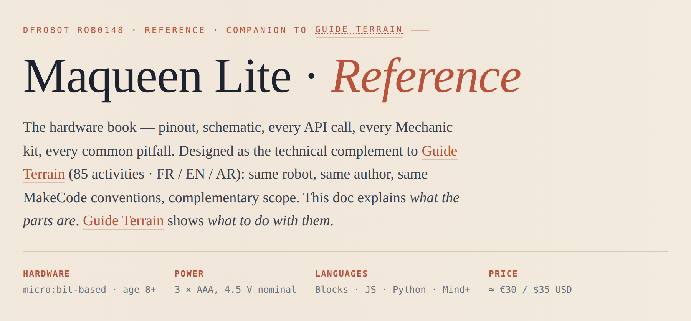
01Hero
Cream background, terracotta kicker, Cormorant Garamond title. The kicker explicitly names the relationship: "DFRobot ROB0148 · Reference · companion to Guide Terrain".
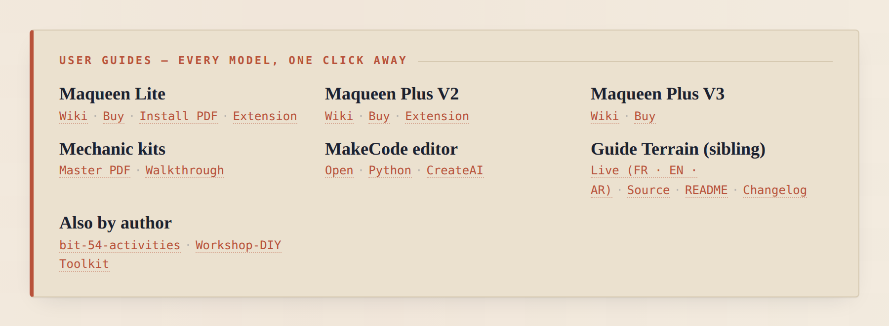
02User-guides quick-access panel
Seven rows of clickable links: Maqueen Lite, Plus V2, Plus V3, Mechanic kits, MakeCode editor, Guide Terrain (sibling) with four links, and Also by author with two sibling-project links.
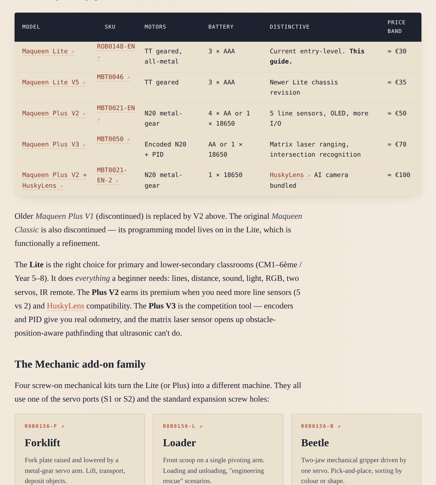
03Maqueen family comparison table
Long table covering Lite vs Plus V2 vs Plus V3. The canonical visual for "which Maqueen do I buy?".
§ 04–05Hardware reference
Pinout schematic, universal mounting points.
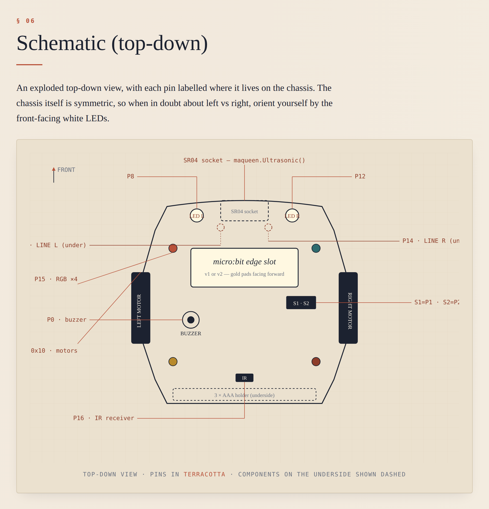
04Anatomy & pinout
Master visual reference. Every pin labelled (P0 buzzer, P1/P2 servo, P8/P12 LEDs, P13/P14 line sensors, P15 RGB×4, P16 IR receiver, I²C 0x10 motors).
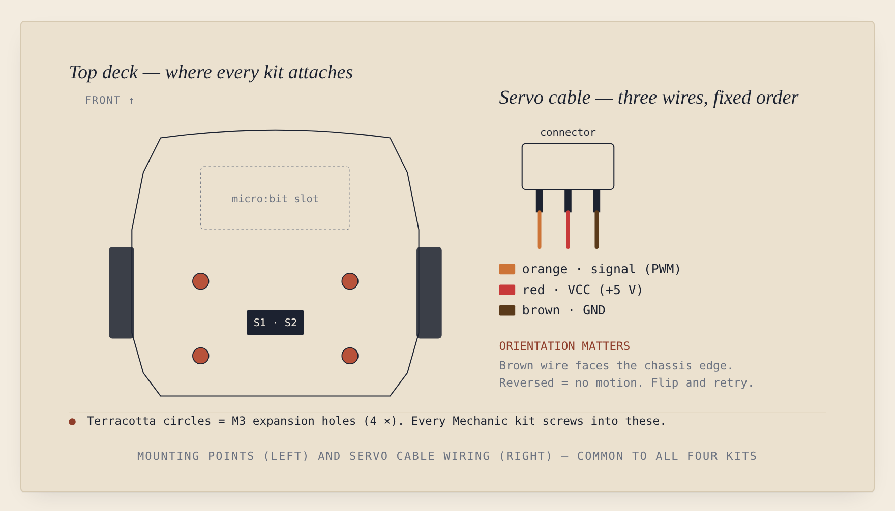
05Universal mounting reference
Four M3 expansion holes highlighted in terracotta — every Mechanic kit attaches here. Wiring inset shows servo cable colour code (orange / red / brown).
§ 06–07Connection close-ups (kid-friendly)
Designed so a child can connect everything without help.
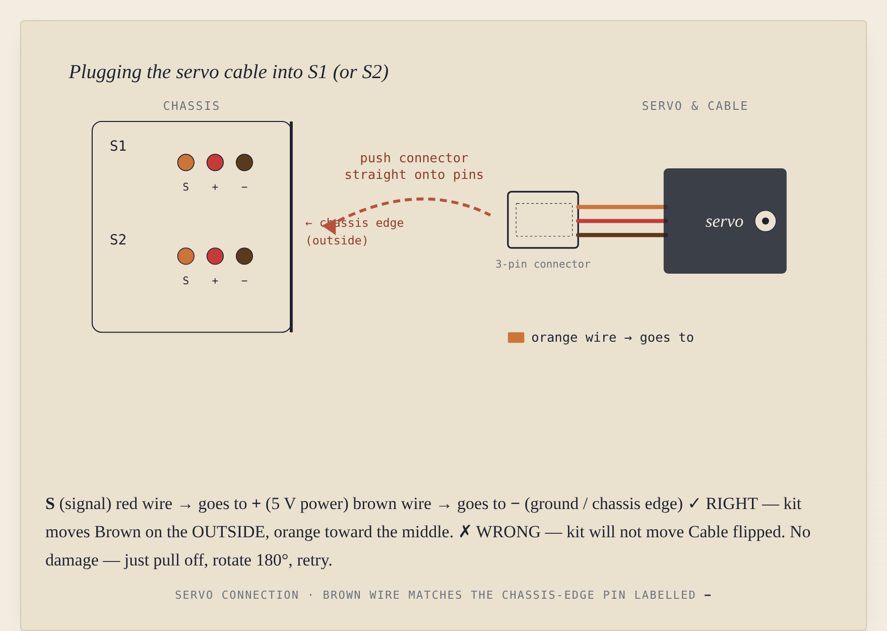
06Servo cable connection
Both S1 / S2 sockets drawn with three coloured pins matching the wires. Green ✓ panel (brown wire on the outside) and red ✗ panel (flipped — no damage, just retry).
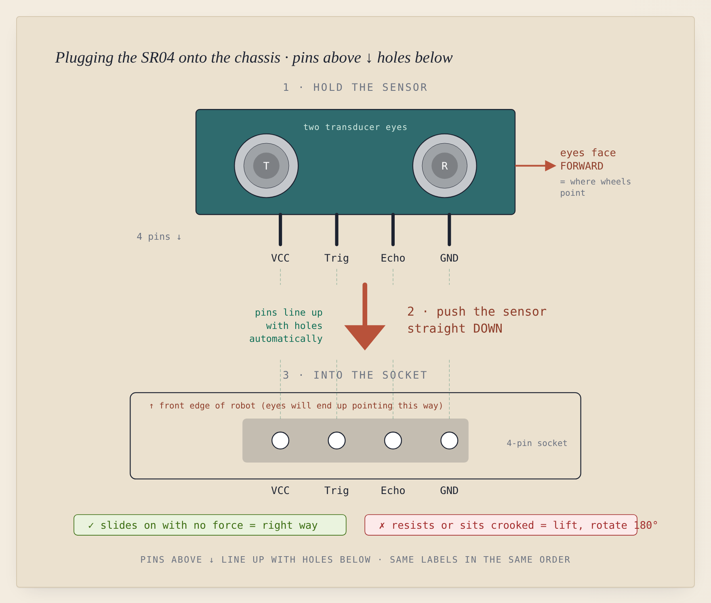
07SR04 connection ★ redesigned
Vertical layout: sensor on top, big terracotta down-arrow in the middle, socket below at matching x-coordinates. Three numbered steps: 1 · HOLD · 2 · push DOWN · 3 · INTO THE SOCKET. Dashed alignment lines tie each pin to its corresponding hole.
§ 11Wiki examples catalog (new in v1.1)
All 16 official examples from the DFRobot ROB0148 wiki, catalogued with API tags and dual links.
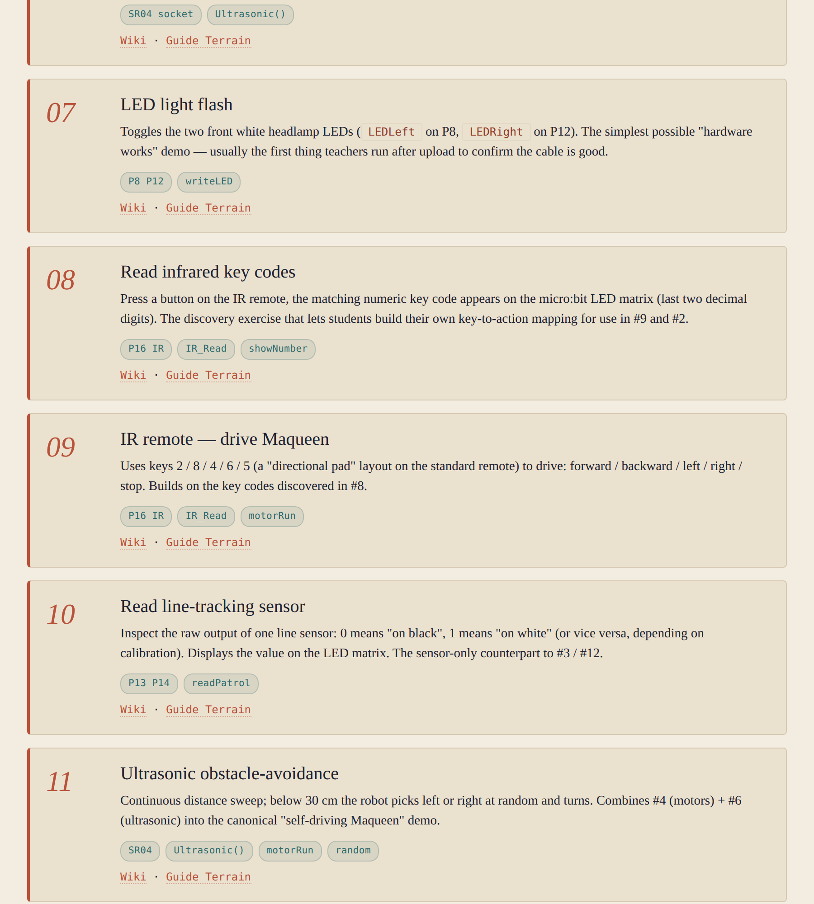
16Section 11 — introduction & first 4 entries
Heading, "Where to find the actual code" callout, and the first four catalog entries (#01 Getting Started, #02 IR remote, #03 Auto line-tracking, #04 Motor control).
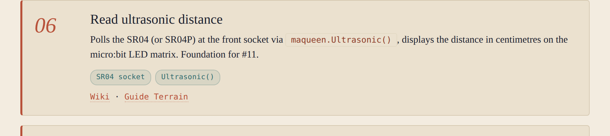
17Card composition (entry #06)
Italic 06 number, Cormorant title, prose with inline code, teal API pills, dotted-underline links to Wiki + Guide Terrain. The visual unit repeated 16 times in the section.
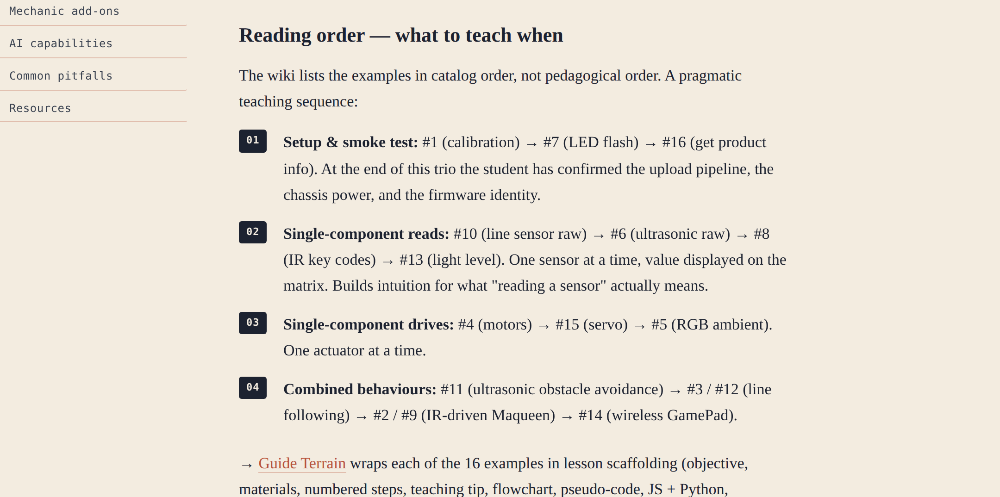
18Reading order — what to teach when
Four numbered phases at the end of § 11: setup & smoke test → single-component reads → single-component drives → combined behaviours.
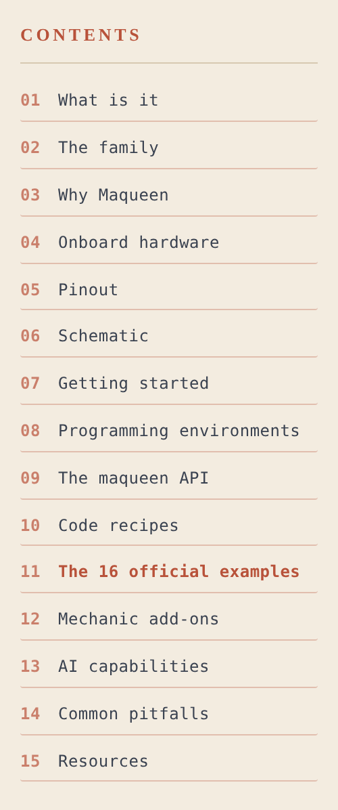
19Updated sticky sidebar (15 sections)
After the wiki-examples section was inserted, Mechanic / AI / Pitfalls / Resources became §§ 12–15. Anchor IDs unchanged — old links still work.
§ 08–11Mechanic kit profiles
One side or top-view diagram per kit, with annotations.
Single pivoting arm with bucket scoop on the end, arc-of-motion indicator.
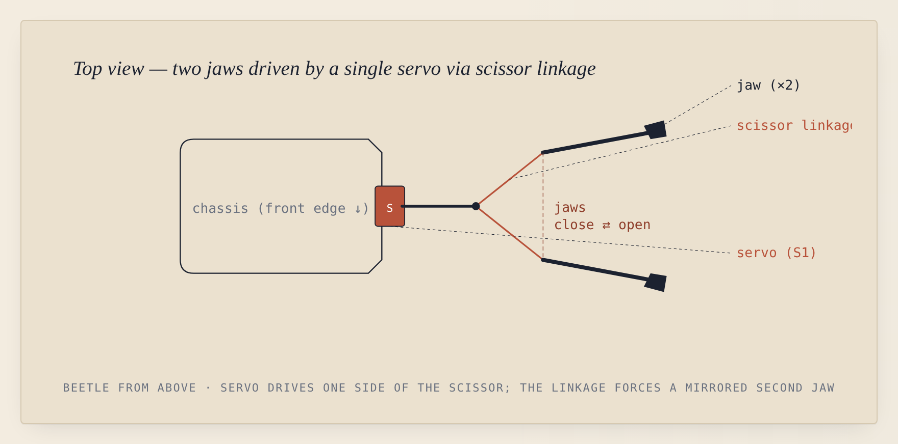
10Beetle gripper (ROB0156-B)
Top-down view showing the scissor linkage that converts servo rotation into mirrored jaw motion.
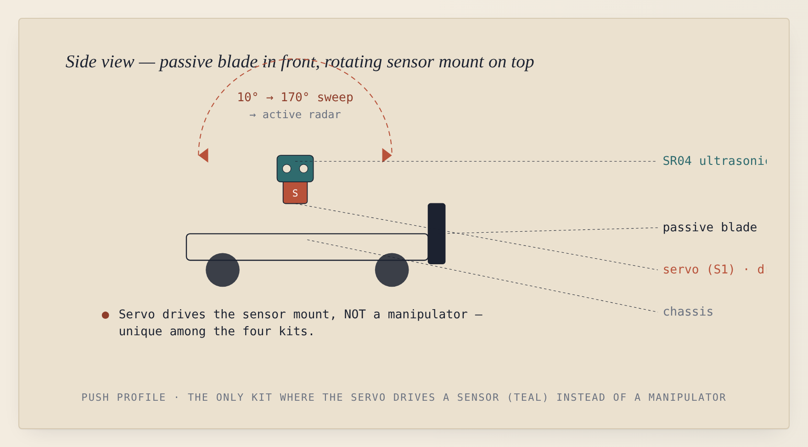
11Push profile (ROB0156-P)
Passive blade in front + rotating ultrasonic mount on top with 10°→170° sweep arc. SR04 coloured teal — the only kit where the servo drives a sensor instead of a manipulator.
§ 12–14Reference panels & BoMs
Assembly tutorials index, plus the verified bill of materials for each kit.
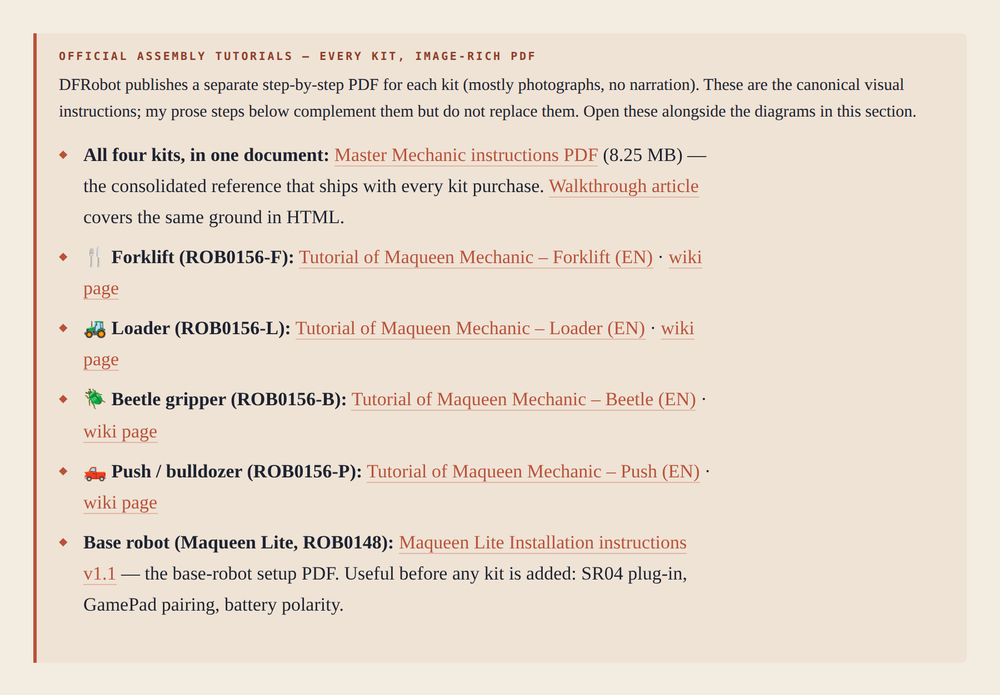
12Official assembly tutorials panel
Six links: Master Mechanic instructions PDF (consolidated reference), four per-kit tutorial PDFs, and the Maqueen Lite Installation Instructions v1.1.
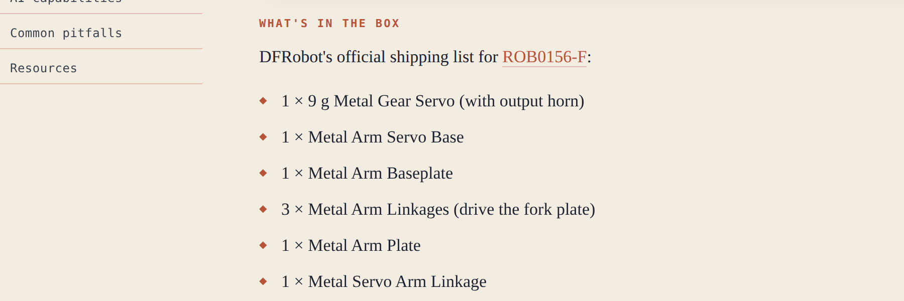
14aForklift BoM
Verified shipping list: 9 g metal gear servo, metal arm servo base, baseplate, 3× linkages, plate, servo arm linkage, forklift plate, 2× M3×15 mm copper pillars, 5× M2.5×5 mm screws, 18× M3×5 mm screws.
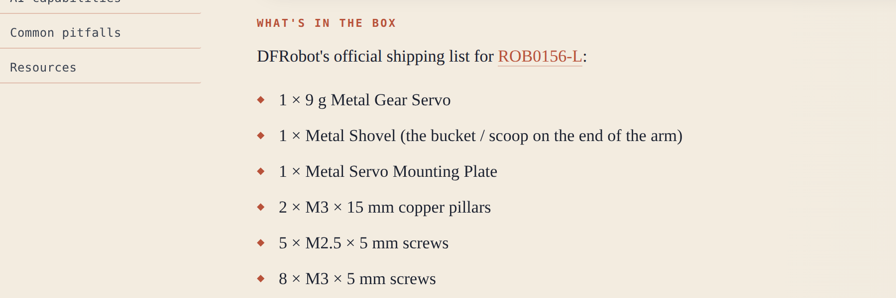
14bLoader BoM
Compact list — 7 part types. Verified against Element14 / Farnell distributor listings.
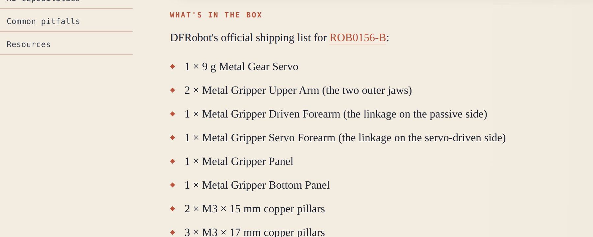
14cBeetle BoM
The longest list — 10 distinct part types. Cross-checked against Core Electronics' shipping list.
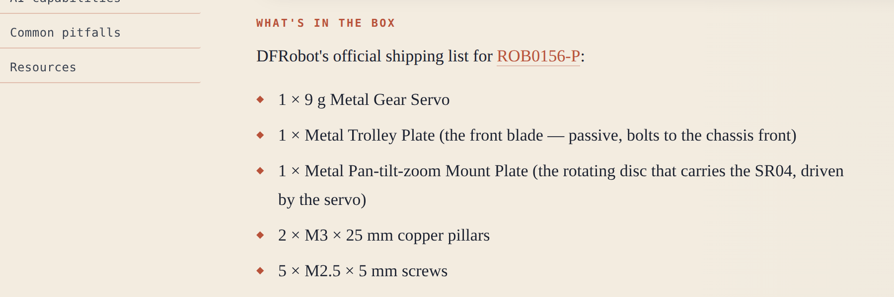
14dPush BoM
Notable: includes a 4-pin ultrasonic extension wire, the most overlooked part in classroom Push assemblies.
§ 15Footer
Closing credit naming the relationship to the parent repo.
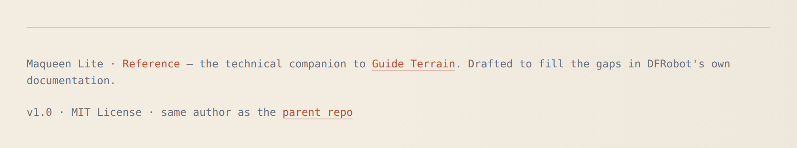
15Footer credit
"Maqueen Lite · Reference — the technical companion to Guide Terrain. v1.1 · MIT License · same author as the parent repo."